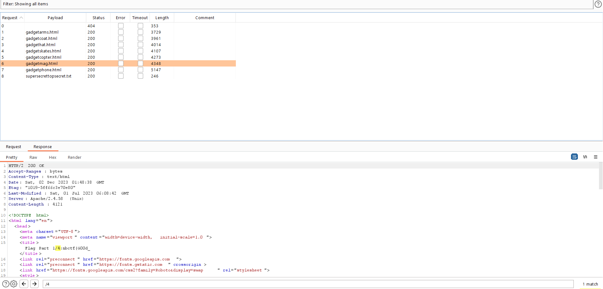

*Mục tiêu của bài là tìm các mảnh ghép của flag được giấu đi
Khá giống như bao bài 1 của các đề khác
Đầu tiên là dạo và dùng thử web
Chỉ toàn là html và chữ, có những trang html khác được liên kết trong phần script

Mình Intruder tất cả đường dẫn đó. Và nhận được mảnh ghép đầu tiên ở gadgetmag.html
Mảnh thứ 2 ở supersecrettopsecret.txt
Mình check thử robots.txt và có đường dẫn /mysecretfiles nhưng đã disable với tất cả user-agent mình đã thử nhưng không truy cập được
Dạo chút nữa mình thấy được mảnh thứ 3 ở index.html (vì rất nhiều chữ nên search theo key /4 là được)
Với đường dẫn ở trong robots.txt mình bypass thử và thành công tìm được /mysecretfiles.html
Truy cập vào và lấy được mảnh ghép cuối cùng
Bài 2: web/walter's crystal shop
*Mục tiêu của bài là path traversal để đọc flag (hơi khác là lưu trong /tmp/flag.txt)
Vì bài không có nhiều tính năng nên dùng thử bằng burp sẽ có được tất cả request của server xử lý
Đầu tiên thử upload 1 file bất kì lên và xem request bằng burp
/galleria?file= là đường dẫn để xem được file đã tải lên
Zui zui xíu mà web code python toàn đăng shell PHP với reverse private ip :>>
Giờ đổi thử tên file thành /etc/passwd
Thành công lấy được file /etc/passwd của server
Đổi path và lấy được flag của bài
Bài 3: web/secret tunnel
*Mục tiêu của bài là SSRF để truy cập vào localhost port 1337 /flag
Lúc đầu ban tổ chức còn build lỗi file dockerfile vì không public port 5000 ra nên mình phải build lại local
Mọi người có thể sửa file dockerfile như mình rồi chơi local là được
Bài làm whitebox và source khá nhỏ nên view qua là biết hướng khai thác
Bạn sẽ nhập một url input vào và server sẽ dùng requests.get để truy cập
Nhưng bị blacklist mất một số từ như '127', 'x', 'ít hơn 3 dấu.', 'flag'
'localhost' sẽ bypass được '127' và việc cấm 'x' chắc không muốn nhận url ngoài nhiều à :v
Đầu tiên mình nghĩ FLAG, Flag sẽ bypass được 'flag' nhưng không vì không có hàm lower() trong flag.py
Thì thôi ta để thành tất url encode là xong :>
Lụm cờ thôi!
Bài 4: web/Galleria
*Mục tiêu của bài là SQLi đọc flag trong cột flag bảng flag :>
Nói chung là baby SQLi thôi mà không biết sao lại là whitebox
Mình nhìn qua code thấy có đoạn SQLi này và quá lười để làm tay :> sqlmap thôi
Lụm cờ, lụm cờ
Nhìn chung là đề web rất dễ còn mảng khác thì mình kém nên không nhận xét được gì nhiều